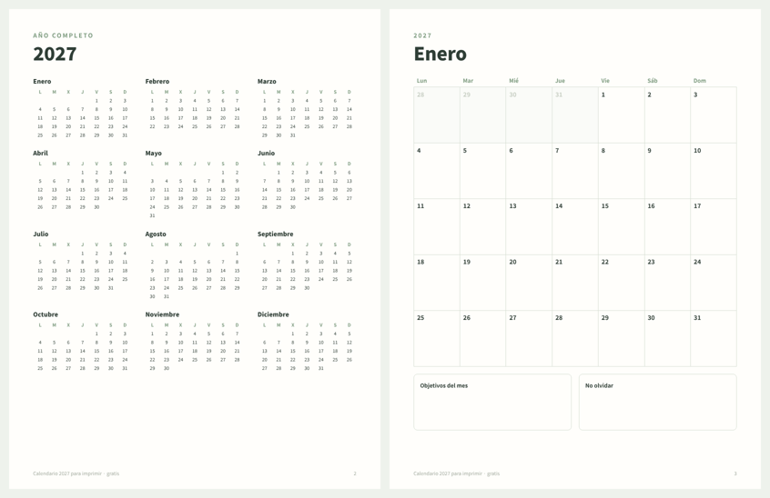

GRATIS · PDF · 2027
Calendario 2027 para imprimir gratis
Un PDF de 13 páginas: el año completo en una página y una página para cada mes de 2027, con espacio para escribir en cada día. Semana de lunes a domingo, tamaño carta (se imprime en A4 con «ajustar a la página»). Sin correo ni registro.
Descargar el calendario 2027 (PDF, 13 páginas)Imprime solo los meses que necesites, todas las veces que quieras.

Datos útiles de 2027
- 2027 empieza en viernes y termina en viernes.
- No es bisiesto: febrero tiene 28 días.
- Semana Santa: Jueves Santo 25 de marzo, Viernes Santo 26 de marzo, Domingo de Pascua 28 de marzo.
Los festivos cambian según el país y la región, por eso este calendario va sin festivos: anota los de tu zona en cada mes.
¿Quieres organizar también tu dinero?
Prueba la plantilla de presupuesto gratis para Excel y Google Sheets, o calcula tu aguinaldo.